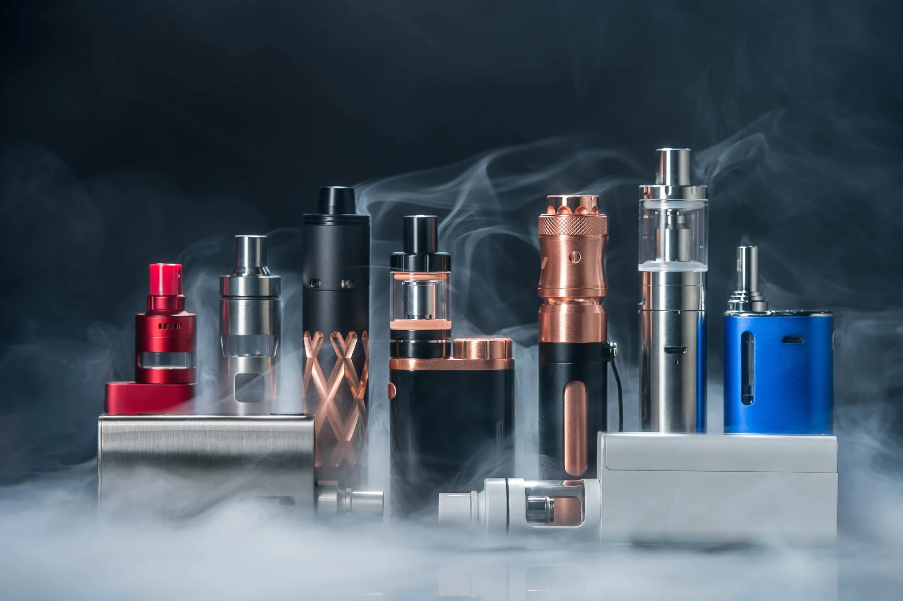

Vaping
Doing it just to look cool?

Doing it just to look cool?
Vaping is a simulation of smoking.
Instead of burning a substance (e.g. tobacco) and then ingesting the smoke, we heat vaping liquid with a small electronic device (vape) to create an aerosol (not water vapor, but different from smoke) containing chemicals, flavors and nicotine. These substances are transmitted into our system with the penetration of the aerosol into our bloodstream through the lungs.
The e-liquid is made of 4 main ingredients: nicotine (as in cigarettes), water, flavors and a base of propylene glycol or vegetable glycerin (sometimes a mixture of both). The latter two substances are used to produce the aerosol.
According to some studies, many electronic cigarettes claiming to be nicotine-free (claiming to use synthetic nicotine) contain traces of nicotine.
Propylene glycol is generally safe for consumption, but it can cause allergic reactions (lung or eye irritation). It can also be harmful to the health of people with chronic lung diseases, such as asthma and emphysema.
Vegetable glycerin is a substance that our body cannot fully absorb. When ingested in too large an amount, it can cause headaches, dizziness, nausea, vomiting, flatulence, diarrhea or excessive thirst in some.
Most flavors are harmless and are used in artificially flavored foods. However, studies suggest that diacetyl, a chemical commonly used to create a buttery taste in popcorn, is one of the causes of bronchiolitis obliterans, also known as "popcorn lung."
In addition to these basic components, the e-liquid contains other substances:
Carcinogens (substances that can cause cancer), such as acetaldehyde and formaldehyde.
Chemicals that can cause lung disease, such as acrolein, diacetyl and diethylene glycol.
Acrolein, a herbicide that can cause irreversible lung damage
Tetrahydrocannabinol (THC), a chemical in marijuana that gets you high.
Vitamin E acetate, linked to lung damage caused by vaping.
Heavy metals (nickel, tin, lead, cadmium), with cadmium potentially causing respiratory problems and other diseases.
Benzene, a volatile organic compound (VOC) found in car exhaust.
Ultrafine particles are often used in e-liquid. They can penetrate deep into our lungs.
All these substances enter our system and leave chemical residues.
Contrary to what you might think, vaping is not a solution to smoking. Although one is exposed to fewer chemicals, dangers are still present. These include:
Asthma. Vaping can make us more susceptible to asthma and other lung diseases or make existing asthma worse.
Lung scarring. This is one of the consequences of bronchiolitis obliterans. These scars are permanent.
Organ damage. The substances we come into contact with when we vapourize can cause damage to our lungs, heart and brain. Nicotine, it can harm our brain development, increase blood pressure and narrow our arteries, making us more vulnerable to stroke, heart attack or heart disease
EVALI (e-cigarette, or vaping, product use associated lung injury). It's a serious lung condition (possibly fatal: 68 people died from it in 2019-2020) caused by vaping that causes widespread damage to our lungs and gives us symptoms such as coughing, shortness of breath, and chest pain.
Addiction. When we become addicted to nicotine, we will always want more, even if it has an impact on our health. E-liquids declared nicotine-free all contain small traces of the substance.
Smoking. Many people starting with vape end up smoking cigarettes, which contain more harmful chemicals.
Secondary exposure. Even though vapor does not produce smoke, it does produce an aerosol that affects people around us as much as cigarette smoke.
In addition to the dangers of vaping, the activity can also lead to side effects, such as shortness of breath, eye irritation, headaches, nausea or dry, irritated mouth and throat.
Vaping has an impact on our lives that should not be ignored. For just a temporary whiff of joy, we lose a lot in other aspects of our lives. Here are some reasons why we should stop vaping:
Addiction. In a growing brain, an addiction can increase our chances of becoming addicted to other substances.
Risks to the brain. Nicotine affects the development of our brains, making it harder to concentrate, remember and learn. In addition, some of these brain changes are permanent: they can affect our mood and our ability to control our impulses as adults.
Use of other tobacco products. Studies show us that vaping makes us more likely to try other tobacco products such as regular cigarettes, cigars, hookahs, and smokeless tobacco.
Toxins (poisons). The vapor produced by vapes is composed of water and contains many harmful chemicals and very fine particles that are inhaled into our lungs and exhaled into the environment.
Sports. With intense physical activity, this unhealthy habit can lead to lung inflammation (irritation).
Money. The more cartridges we buy, the more money we lose. Instead, we could be buying other things we like.
E-liquid is toxic when swallowed or absorbed through the skin or eyes. Exposure can cause redness, nausea and vomiting.
An average vape capsule contains as much nicotine as 20 cigarettes. Inhaling too much nicotine can cause seizures and convulsions.
Vaping devices can explode when their batteries overheat.
When we take too much nicotine, we become intoxicated. There are two stages to nicotine overuse: mild overdose (1-2 hours duration) or severe intoxication (up to 24 hours duration).
During an overdose, symptoms occur from the first 15 minutes to an hour. These include a feeling of nausea or vomiting, stomach upset, water in the mouth, rapid and heavy breathing, faster heartbeat, increased blood pressure, pale skin, headache, dizziness, imbalance or confusion.
Other symptoms occur later in an overdose (30 to 4 hours later). These include diarrhea, shallow breathing, slowed heart rate, decreased blood pressure, lethargy (when one is in a deep sleep where one feels nothing despite stimuli), feelings of weakness, slow reflexes or inability to control muscles, seizures
Quitting vaping is really good for your health. Of course, it's not always easy. Here are some tips to help you quit this unhealthy habit:
Find the reasons you would like to quit vaping and write them down in your phone. Look at these causes when you had the urge to smoke.
Choose a day to quit vaping. Mark it on your calendar and tell your supportive friends or family.
Get rid of all your vaping equipment.
Download tools (apps or texting programs) that can help you counter your cravings and encourage you while you try to quit.
You can try: a website or apps
Understand the withdrawal you will have to endure. The lack of nicotine can cause very strong cravings for the substance. On top of that, it can cause headaches, feelings of fatigue, bad moods, anger or depression, difficulty concentrating, trouble sleeping, hunger or restlessness. These effects are strongest in the first few days after stopping, but weaken over the following days and weeks.
Be prepared for the feelings, people and places that make you want to smoke and try to avoid them. If you have the urge to smoke, you can go to a place where smoking is not allowed, calm down (by taking deep breaths, doing yoga or meditation, taking a walk, listening to music), keep your hands busy with a hobby (drawing, painting, sewing), or call someone close to you for support.
According to one study, vaping is more effective than other nicotine replacement therapies for quitting smoking. Yet the majority of people continued to vapourize, which means they were still exposed to the harmful substances in vape and were still using nicotine. Moreover, the study also shows that vaping makes teenagers more likely to start smoking.
Just like cigarettes, vapes contain chemicals that are toxic to humans. Although they contain less, at least 30 are still present in vape and the danger is very real, since vape still contains carcinogens.
Contrary to what you might think, vape does not produce water vapor. Instead, it produces an aerosol that includes ultrafine particles and hazardous substances that penetrate deep into our lungs.
A single capsule of e-liquid contains as much nicotine as 20 cigarettes and since it is this substance that makes us addicted to vapes and cigarettes, it is no easier to stop vaping than smoking. This is actually one of the reasons why teenagers are switching from vaping to cigarettes.